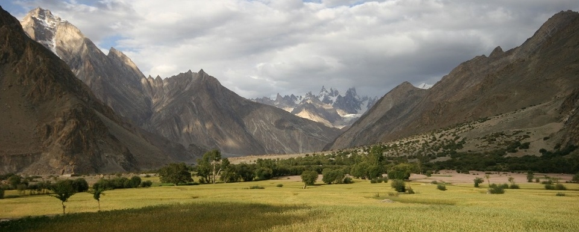

Parks in Pakistan
Deosai National Park

The Deosai National Park is located in between Skardu, Gultari, Kharmang and Astore Valley , in northern Pakistan.
In Urdu language Deosai Urdu "دیوسای٘" means 'the land of Giants'.It is locally called غبیارسہGhbiarsa by Balti people because it is only accessible in summer.
It is well known for its rich flora and fauna of the Karakoram-West Tibetan Plateau alpine steppe ecoregion. In the Spring season it is covered by sweeps of wildflowers and a wide variety of butterflies.
The Deosai National Park was established in 1993 to protect the survival of the Himalayan brown bear and its habitat.
The Deosai Plains are also home to the Himalayan ibex, red fox, the snow leopard, and over 124 resident and migratory birds.
Birds in the park include the golden eagle, lammergeier, kestrel, sparrowhawk and snowcock.
Lulusar-Dudipatsar National Park
Lulusar-Dodipat National Park is located in the Kaghan Valley in Mansehra District of Khyber-Pakhtunkhwa.
The park was created in 2003.
The scenic Dudipatsar Lake and Lulusar Lake and peaks are in the park.
The road is accessible by cars and motorbikes.
The 2005 Kashmir earthquake in North Pakistan made access more difficult.
However since 2006 the Pakistan government has taken 'all steps' to restore tourism in the Kaghan Valley, including rebuilding and new tourism facilities and infrastructure.
Saiful Muluk National Park

Saiful Muluk National Park is located in the Naran Valley in Mansehra District of Khyber-Pakhtunkhwa, in northern Pakistan.
The park was created in 2003.
The scenic Saif ul Maluk Lake is in the park.
The flora includes the trees, shrubs, perennials, and herbs of the Himalayan Western Himalayan subalpine conifer forests and higher elevation Western Himalayan alpine shrub and meadows ecoregions.
Some of the park's fauna includes the snow leopard, asiatic black bear, marmot, weasel, eurasian lynx, indian leopard , Himalayan snowcock, and the snow partridge.
The park's lakes and wetlands habitats are of significant ecological importance for resident fauna and migratory waterfowl.
Toli Pir

Toli Pir is a hilltop area situated in Tehsil Rawalakot in the Poonch District of Azad Kashmir.
Its approximate elevation is about 8800 ft above sea level.
It is about 30 km, or a 45-minute drive, from Rawalakot in Azad Kashmir.
Toli Pir is the highest mountainous location in the northeastern area of Rawalakot; it is the point of origin of three different mountain ridges.
The tourist rest house on the way to Toli Pir is also situated in a scenic location.
There are some remains of an old mazar on the highest hilltop.
Toli Pir is most accessible during the summer months; the weather is generally pleasant but becomes colder from October through March.
The area's natural beauty is at its peak from April to September.
Panjal Mastan National Park

The Panjal Mastan National Park is located in the Bagh District of Azad-Kashmir.
Panjal Mastan National Park is at an average elevation of 2800 metres (9186 feet) above the sea level, making the Panjal Mastan Plains one of the highest plateaus in the Bagh.
The park protects an area of 3,00 square kilometres.
It is well known for its rich flora and fauna of the Pir Panjal ecoregion.
In the Spring season it is covered by sweeps wildflowers.
Broghil Valley National Park
Broghil Valley is a valley and national park located in the upper northern reaches Chitral District, of Pakhtunkhwa.
It is located close to the Afghan-Pakistan border.
The area is mostly mountainous tracts.
Elevations range from 3,280m at Kishmanjah village to 4,304m at Karamber Lake in northeast.
The terrain is undulating, with steep mountains, wide stretch grassy plains and narrow valleys.
The total area of peatlands and lakes is almost 3,400 ha.
Margalla Hills National Park
The Margalla Hills National Park is located in Islamabad, at the foothills of the Himalayas and is a National Park.
It is approximately 17,386 hectares (67.13 sq mi) in size.
Tilla Charouni with 1,604 m is its highest point.
Margalla hills have beautiful torrents gushing down in the monsoon. Natural springs are also present.
Margalla has a variety of mammals, they include the leopard, gray goral, barking deer, wild boar, jackal, red fox and the porcupine among others.
It is also home to a large number of birds such as larks, paradise flycatcher, black partridge, shrikes pheasants, spotted doves, Egyptian vultures, falcons, hawks and eagles.
Reptiles such as the Russell's viper, Indian cobra and saw-scaled viper are found here.
Lal Suhanra National Park
Lal Sohanra is a national park of Pakistan situated in Bahawalpur district of Punjab province, which is one of the largest nationals parks in South Asia.
Lal Sohanra is spread over 153000 acre and is notable for the diversity of its landscape, which includes areas of desert, forest and water.
The Punjab government has plans to convert the Lal Sohanra National Park into a wildlife safari park of international standard.
One of its most prominent attractions is currently the lion safari, which allows guests to see lions in their natural habitat at close range.
In addition, the park's captive breeding suite holds a pair of Indian rhinoceros which were given by Nepal.
Chitral National Park
Chitral National Park is one of the national parks of Pakistan.
It is located in Chitral District in Khyber-Pakhtunkhwa beside the Chitral River, at a distance of two hours drive from Chitral city.
The park is also known as Chitral Gol National Park.
This park includes three valleys.
Several glaciers also lie in the park through which several springs make their way and ultimately form a stream of 18 metres.
The cold water of this stream falls towards the east into the Chitral River.
The park is rich in trees particularly Cedar trees.
This park also serves to provide shelter to a vast diversity of animals especially Markhor, an endangered wild goat species.
The subspecies, which occurs in the Park is the Astor Markhor.
Central Karakoram National Park

The Central Karakoram in the Gilgit-Balitstan of Pakistan is a mountain area endowed with rich biodiversity, natural beauty and important resources.